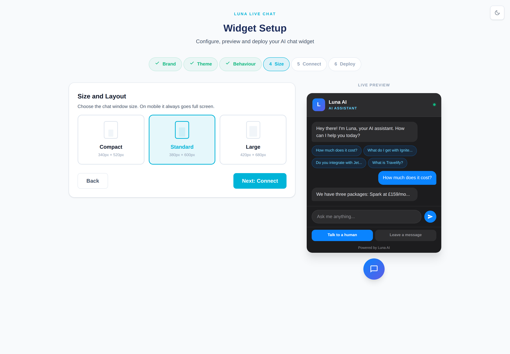
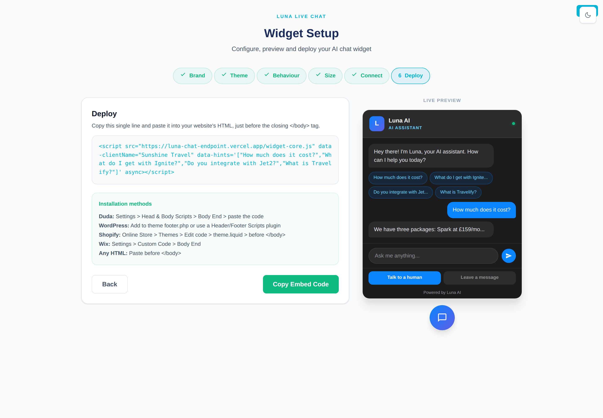

Everything you need to set up your AI chat assistant, train your team and go live — from your first login to your first happy customer.
For travel businesses
Set‑up · daily use · going live
Audience: site admins & chat agents
What's inside
Welcome — what Luna Chat doesThe three parts you'll use, and what Luna can do
Designing your chatBrand, colours and welcome message, with a live preview
Luna Brain — keeping your AI accurateFix gaps, approve answers and verify knowledge in one click
The Agent Dashboard — daily useSign in, presence, conversations, take over, reply
Luna Copilot — your agents' AI assistantSuggested replies, rewrites and thread summaries
Sharing files and imagesSend documents and photos both ways in chat
WhatsApp in the same inboxOne place for web chat and WhatsApp
Ratings, receipts, transcripts & translationThe finishing touches that delight customers
Your go‑live checklistEverything to tick off before you switch on
1Welcome — what Luna Chat does
Luna Chat is a complete live‑chat system for travel businesses. It gives your website an AI assistant that answers visitors instantly, day and night, grounded in your own knowledge — and hands over to your team the moment a real person is needed.
The three parts you'll use
The chat bubble — what visitors see on your website. You design how it looks and behaves on the Widget Setup page (Section 2).
Luna (the AI) — answers visitors from your approved knowledge. She never invents prices, availability, dates or ATOL/ABTA detail; if she isn't sure she offers to confirm, or hands over. You keep her sharp in Luna Brain (Section 3).
The Agent Dashboard — where your team watches live chats, takes over and replies (Section 4), with Luna Copilot helping them write better replies faster (Section 5).
What Luna does for visitors and agents
Answers questions instantly from your knowledge — in the visitor's own language, translated both ways.
Hands over to a human when the visitor taps Talk to a human, or when Luna decides it's needed.
Lets visitors Leave a message when no one is available.
Shares files and images in chat, both directions (Section 6).
Brings WhatsApp into the same inbox so your team answers everything in one place (Section 7).
Emails the visitor a copy of the chat, collects a star rating and shows read receipts (Section 8).
LUNA IN ACTION Luna answers a family holiday enquiry on the right; your team sees the same conversation live in the dashboard on the left.
Tip. Think of Luna as your tireless first responder. She handles the routine 24/7, so your people spend their time only on the conversations that genuinely need a human touch.
Good to know — the clever bits are already done for you. The AI brain, security, photo and document sharing, WhatsApp and translation are all built in and switched on by the Travelgenix team. There's nothing technical for you to install or manage — this guide simply shows you how to use Luna.
2Designing your chat
You decide how your chat looks and sounds in the Widget Setup page — a simple, click‑through set of steps with a live preview beside it that updates as you go. No design skills needed. The steps are Brand, Theme, Behaviour and Size (the last two, Connect and Go live, are usually handled for you — see the end of this section).
Move through with the Next button and Back if you want to change something.
Tip. Keep an eye on the live preview while you work — every change shows up there at once, so you never have to guess how it will look.
Step 1 — Brand
"Set up how Luna appears on your website."
STEP 1 Brand Identity, with the Live Preview on the right.
Field
Default
What it does
Bot Display Name
Luna AI
The name shown at the top of the chat (e.g. "Sunshine Travel Assistant").
Tagline
AI ASSISTANT
The small line under the name.
Logo Letter
L (max 2)
The letter(s) in the round logo badge.
Your Company Name
e.g. Sunshine Travel
Your business name. This identifies your account, so fill it in.
Footer Text
Powered by Luna AI
The small line at the very bottom of the chat window.
Tip. Keep the Bot Display Name friendly and on‑brand — visitors talk to it by name.
Step 2 — Theme
"Choose a preset theme. Colours apply instantly to the preview." Pick one of six presets — Dark, Light, Ocean, Emerald, Sunset, Rose (default Dark).
STEP 2 Six colour presets; the preview recolours as you choose.
Tip. Choose the theme closest to your website's look. Ocean and Light suit most travel sites; Dark looks sharp on modern, image‑heavy pages.
Step 3 — Behaviour
"Configure welcome message, prompts and settings."
STEP 3 Welcome message, prompt hints, name prompt and button labels.
Field
What it does
Welcome Message
The first thing visitors see. Default: "Hey there! I'm Luna, your AI assistant. How can I help you today?"
Prompt Hints (one per line)
The tappable suggested questions visitors see. Up to four appear.
Ask for visitor's name
An on/off switch (on by default) — whether Luna asks the name before starting.
Name Prompt
The wording used to ask. Default: "Before we start, what's your name?"
Escalation Button Text
The button to reach your team. Default: Talk to a human
Leave Message Button Text
For when no one is available. Default: Leave a message
Tip. Write Prompt Hints as the real questions your customers ask — they double as a menu and gently steer the conversation. e.g. "Best Greek islands for families", "All‑inclusive under £800", "Do you do the Maldives?"
Step 4 — Size
"Choose the chat window size. On mobile it always goes full screen."

STEP 4 Compact (340×520), Standard (380×600, default) or Large (420×680).
Tip.Standard suits most sites. Pick Large only if you expect long, detailed conversations. On phones the chat always fills the screen.
Steps 5 & 6 — Connecting Luna to your website
The last two steps, Connect and Go live, are the only slightly technical part — and the good news is your Travelgenix account manager normally does these for you. In most cases your chat is already connected and live on your website by the time you're reading this, so there's nothing here you have to do.

DONE FOR YOU The final step produces a small piece of website code. Your account manager handles this — you don't need to understand it.
If you ever want to add the chat to a new website yourself
Copy the code shown on the final step (press Copy).
Send it to whoever looks after your website, with a note: "Please add this to our site so our live chat appears."
That's it — it works with all the usual website builders (WordPress, Wix, Shopify, Duda and more).
Tip. Not sure who looks after your website? Your Travelgenix account manager is happy to add the chat for you — just ask.
Tip. Once it's on, open your website in a new tab and look for the little chat bubble in the corner. Say "hello" to see Luna reply — that's your proof it's working.
3Luna Brain — keeping your AI accurate
Luna Brain is where you keep Luna's knowledge accurate — "The things your AI couldn't quite handle — fix them in one click." Most fixes here really are one click. The summary cards at the top cover the last 7 days: Conversations, Avg quality, Answer rate, Open gaps, Suggested and Review due.
LUNA BRAIN Summary cards, then your working sections: Knowledge gaps, Suggested by Luna, and Review due.
3.1 Knowledge gaps
Questions visitors asked that Luna couldn't answer confidently. Each card shows the question, topic, how often it was asked, and a suggested answer from Luna.
Approve & add — accepts Luna's suggested answer as‑is and adds it to her knowledge.
Edit first — open the answer, correct it, then Save & approve.
Dismiss — removes the gap (you'll confirm first).
Tip. Gaps are gold — the real questions your customers asked. Clear them weekly and Luna gets noticeably smarter. Always read the suggested answer first; where a price or policy is involved, use Edit first and put in the exact wording.
3.2 Suggested by Luna
Fresh things‑to‑do that Luna drafted from your own sources. Press Approve to make it live, or Dismiss to discard.
Tip. These are a fast way to build up Luna's knowledge — but always sanity‑check each one before approving. You're the final word on what's accurate.
3.3 Low‑quality conversations
Where Luna's answer scored 1 or 2 out of 5. Each card shows the score, topic, the reason, what was missing, and an expandable transcript.
Tip. Skim this weekly — a cluster of low scores on one topic usually points to a single missing piece of knowledge you can fix for good.
3.4 Review due
Answers that have gone a while without a check. Press Mark verified to reset the clock.
Note. Marking verified never changes Luna's answer — it just records that you've checked it's still true. Do a pass through "Review due" monthly, especially before peak booking season, so seasonal prices and offers stay current.
3.5 Top knowledge items
The answers Luna uses most, with Question, Type, Confidence, Last used and Uses. Click the pencil to edit any answer inline; set Status to Active, Draft or Archived, then Save changes.
Tip. Set Status to Archived to retire an answer Luna should no longer give (e.g. a discontinued package) without deleting your history.
What good knowledge looks like
One clear question per entry, written the way a customer would ask it.
A short, factual answer — exact figures, dates and terms where relevant.
No guesses: if a detail can change (price, availability), keep it current or word it so it stays true.
4The Agent Dashboard — daily use
The dashboard, titled Luna Live Chat, is where your team works each day — watching live chats, taking over when needed and replying.
DASHBOARD Conversations (left), the live thread with Take Over / Resolve / Block (centre), and the visitor info & Quick Replies panel (right). The Copilot bar sits just above the reply box.
4.1 Signing in
Your team opens the dashboard with their normal Travelgenix login — no extra password to remember. If someone helps more than one business, they'll be asked to pick which one. To leave, use Sign out.
Tip. Bookmark the dashboard. Because it signs you in automatically, your agents can be answering chats within seconds.
4.2 Presence — Online / Away / Busy
Each agent sets their status in the top bar: Online (green), Away (amber) or Busy (red). Everyone signed in appears under Agents Online.
Tip. Set yourself to Away when you step off the desk so colleagues know who can actually pick up.
4.3 The Conversations list
The left sidebar has two tabs — Live (current chats, with a count) and History (resolved chats). Search with "Search conversations…". Each row shows the visitor's name, time, a preview and a handler chip:
Luna AI — the AI is handling itAgent — a human has itWaiting — escalated, needs a human
WhatsApp chats carry a green WhatsApp badge (Section 7).
Tip. Sort your attention by the chips — Waiting (amber) means a customer is asking for a person right now; make that your first stop.
4.4 Reading a conversation
Open a chat to see the full thread. Messages are labelled by sender — Luna for the AI, the agent's name for human replies, and the visitor's own messages. A bouncing three‑dot indicator shows when the visitor is typing. Non‑English messages show a small language pill and are auto‑translated both ways.
Tip. Scroll up before you reply — Luna may already have answered most of the question. Pick up where she left off rather than starting again.
4.5 Agent actions
Take Over — you take control; Luna steps back and stops auto‑replying.
Resolve — closes the conversation and moves it to History.
Block — blocks the visitor ("They won't be able to start new conversations.").
Tip. Use Take Over the moment a chat needs human judgement — a complaint, a complex itinerary, a booking change. Press Resolve when it's genuinely closed to keep your Live list clean.
4.6 Sending a reply
Type in the box ("Type your reply… (Shift+Enter for new line)") and press Send. Above the box are the Quick Replies and Attach buttons.
Tip.Enter sends; Shift+Enter starts a new line — handy for longer, structured replies.
4.7 Quick Replies
Open Quick Replies on the toolbar or in the side panel, and filter with "Filter replies…". Categories are Greetings, Support, Sales and Closing. Add one with + Add new reply (Category, Title, Message, Emoji). Click a saved reply to drop it into the message box.
Tip. Build quick replies for your top ten repeat answers (deposit terms, opening hours, "we'll get back within the hour"). It turns a 30‑second reply into a one‑click one — and keeps wording consistent across the team.
4.8 The info panel — Intel / Session / Details
The right‑hand panel has three tabs: Intel, Session and Details & Replies. Under Visitor Details you'll see name and email (with a green RETURNING badge for repeat visitors), current page, country, device, duration, message counts, handler, language and any rating.
Tip. Check the Intel panel before you reply — knowing the visitor's country, page and what they've already asked lets you answer in one go instead of asking things they've already told you.
4.9 Returning visitors
For repeat visitors the panel shows a Previous Conversations list (date, message count, a short preview). Luna recognises returning visitors automatically — only a name, last‑seen, a count and a short topic summary are surfaced, never full past transcripts.
Tip. A RETURNING badge is a relationship cue. A quick "welcome back" and a glance at last time's topic makes the customer feel known and speeds the booking along.
5Luna Copilot — your agents' AI assistant
Luna Copilot is a private assistant built into the dashboard, just above the reply box (labelled Copilot). It helps agents write better replies faster. Customers never see it — its output only ever goes to the agent, who decides whether to use it.
COPILOT The Copilot bar — Suggest replies, Improve, Friendlier, Shorter, More detail and Summarise — sits directly above the reply box.
Button
What it does
Suggest replies
Offers three ready‑to‑send options, each tagged "From your knowledge", "From the chat" or "Suggested". Click a card to insert it.
Improve
Rewrites your draft for clarity and warmth.
Friendlier
Makes the draft warmer and more personable.
Shorter
Tightens the draft.
More detail
Adds helpful, grounded detail.
Summarise
A short thread summary for handover — who the visitor is, what they want, what's unknown, the best next step.
After a rewrite you can Replace draft (with Undo) or Copy. Shortcuts: Ctrl/Cmd+J suggests replies; Esc clears the panel.
Like Luna herself, Copilot is grounded only in your approved knowledge and the live chat. It never invents prices, availability, dates or ATOL/ABTA detail — instead it leaves a clear bracketed gap such as [check price] or [confirm dates] for the agent to fill in.
Tip. Start with Suggest replies, then tweak with Friendlier or Shorter to match your style. Use Summarise before handing a chat to a colleague — it writes the handover note for you.
Always check. Read Copilot's draft before sending and fill in any [bracketed] gaps with the real figures. Those blanks are deliberate so a number is never guessed.
6Sharing files and images
Both your visitors and your agents can share images and documents right inside a chat. Pictures show as small previews (click to enlarge); other files show as a simple download button.
To attach as an agent, use the Attach button on the compose toolbar, choose your file, then send. Supported types: JPEG, PNG, GIF, WebP, PDF, DOC/DOCX, XLS/XLSX, CSV and TXT, up to 4 MB (large photos are shrunk automatically).
Tip. File sharing is for the human part of a conversation. Luna doesn't read the contents of uploaded files — so when a customer sends a booking confirmation or passport photo, that's the moment to Take Over and handle it personally.
The one‑time storage set‑up is done by the Travelgenix team. Once it's on, attaching works straight away for both your agents and your visitors. (On WhatsApp, an attached file is sent to the customer as a link.)
7WhatsApp in the same inbox
If your business connects a WhatsApp number, those conversations appear in the same dashboard as your web chats — no separate app. A customer messages your number, the chat appears live with a green WhatsApp badge, Luna answers as usual, and your agents reply from the dashboard. Replies are delivered back over WhatsApp automatically.
OMNICHANNEL A WhatsApp chat (see "James W. · WhatsApp" in the list) sits right alongside your web chats.
Work a WhatsApp chat exactly like a web chat: read the thread, Take Over, reply, then Resolve. Escalation works too — a WhatsApp chat that needs a person flips to Waiting and Luna stops.
Tip. One inbox for everything means your team has a single place to watch. Treat a WhatsApp‑badged chat exactly like any other.
The 24‑hour rule. WhatsApp only lets you reply freely within 24 hours of the customer's last message. If a customer goes quiet for more than a day you may not be able to send a free‑form follow‑up — so reply promptly while the conversation is live.
Connecting and provisioning the WhatsApp number is handled by the Travelgenix team — your agents never touch the setup.
8Ratings, receipts, transcripts & translation
Ratings (CSAT)
Visitors can rate a conversation 1–5 stars. A note appears in the thread ("⭐ Visitor rated this conversation 4/5"), the score shows under Rating in Visitor Details, and your overall average appears as CSAT in the dashboard stats.
Tip. Watch the CSAT trend rather than any single score. A dip usually follows a knowledge gap — fix it in Luna Brain and the scores recover.
Read receipts
Agent messages show their state: Sent (✓), Delivered (✓✓) and Read (✓✓ in blue) once the visitor has seen them.
Tip. A blue Read with no reply means they've seen your message and are thinking — give them a moment before nudging.
Email transcript
Visitors can be emailed a tidy copy of their chat ("Your chat transcript"), sent in your business's name. If they hit reply, it goes straight to your contact email.
Tip. Encourage a transcript when a chat includes quotes, dates or terms — it gives the customer a written record and a one‑tap way to reply to you.
Translation
Luna auto‑translates both ways: incoming messages into your agents' language, and replies into the visitor's language on send. The Language field shows "(auto‑translating)" when it isn't English.
Tip. Your agents can serve international customers confidently in their own language — just reply in English and Luna handles the rest.
9Your go‑live checklist
Work through this before you switch your chat on for real customers.
Knowledge added. Luna Brain has Top knowledge items covering your most common questions (prices, hours, deposit terms, financial protection, popular destinations). Open gaps cleared; suggestions reviewed.
Welcome message & prompt hints set in Behaviour, reflecting what you sell.
Branding checked in the Live Preview — name, theme, size and footer look right.
Chat is live on your site — the bubble appears on your website (your account manager usually sets this up for you).
Escalation tested — start a test chat, tap Talk to a human, confirm it appears as Waiting.
Take Over tested — take over the test chat, reply, confirm it reaches the visitor, then Resolve and check History.
Agents trained — each can sign in, set presence, read Intel, use Quick Replies and Copilot, and knows when to Take Over.
Quick Replies loaded across Greetings / Support / Sales / Closing.
One real end‑to‑end chat run — ask a genuine question, let Luna answer, escalate, take over, share a file, email the transcript.
Tip. Keep doing this "full loop" test once a week for the first month — it's the fastest way to catch a missing piece of knowledge before a customer does.
You're ready to go live. Luna Chat · Powered by Travelgenix Need a hand? Contact your Travelgenix account manager.